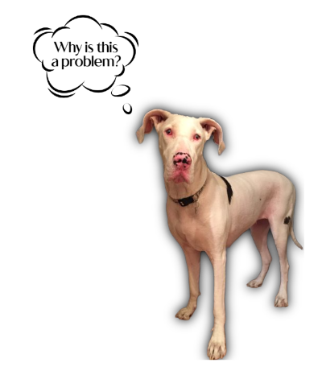

Sophie's Story
People don’t often think about dog breeding and what can go wrong. I didn’t until I got a phone call about a 10-week-old deaf Great Dane puppy that needed a special home. I became that home. I had no idea why she was deaf, and the breeder didn’t either, honestly. This person was well-meaning but uneducated in safe breeding.
Let’s quickly go over what it means to be a “double merle” or homozygous merle, and what the consequences are. In simple terms, breeding “spot to spot” is not sound breeding. If you’ve ever seen a Great Dane that looks like a Dalmatian, that’s a Harlequin Great Dane. If you breed two of these dogs together, the puppies are at risk of inheriting two copies of the merle gene. One copy of this gene causes a marbling effect, for example, white with black spots. Inheriting two copies of this gene doubles the lightening effect and ends up “bleaching” the dog and making it predominantly white. So, why is that a problem, you might ask?

When a dog is lacking pigmentation, particularly in their ears, the little hairs and nerve endings die and fall off early in their life leaving them deaf. Dogs are smart and incredibly adaptable though. They can learn hand signals for communication. A deaf dog can’t hear traffic or other dogs growling, so extra safeguards are necessary.
Being deaf isn’t the only health issue double merle Great Danes face. They can suffer social instability because they miss out on early training with siblings. Part of proper socialization is puppies playing with each other and being able to hear growls and yelps to signal play might be too rough. Obviously, deaf dogs don’t learn that. Double merles are more likely to suffer from allergies, skin cancer, hair/coat problems, congenital cataracts associated with microphthalmia (underdeveloped eyes) that can cause vision impairment or total blindness. Some double merles are born without eyes altogether and can have congenital disorders like epilepsy.
Some unethical breeders will tout these dogs as being “rare whites” without telling potential owners of the likelihood of the dogs having long-term health problems that can be very expensive. They’re striking in appearance. Nearly completely white with blue eyes. It’s ironic that the very defect that can cause so much damage also makes them stunningly beautiful.
My personal experience began with Sophie. I went to meet her the same day I got that phone call, and I instantly fell in love with this little white puppy with strange eyes. I was assured she was only deaf but otherwise healthy. The breeder was a friend of a friend of a friend. They gave her to me at no charge because they wanted her to be in a good home, and I came recommended.
When Sophie was eight months old, she started having seizures and was diagnosed with congenital epilepsy. She required medication twice a day to keep her seizures under control. We had to baby-proof our home in some ways to keep her safer because a dog that weighs 120 pounds having a grand mal seizure … well, you can probably imagine the potential for her to be injured. I learned all I could about her collective conditions so that I could be her best advocate.
Her health issues were costly and at times emotionally taxing, but I wouldn’t change a thing if I could go back. Sophie was the sweetest, most loving dog I’ve ever known. She was particularly attached to me. I think I was her emotional support human in many ways. I was lucky to be working from home during her lifetime. Sophie lived eight years and passed away July 29, 2021. It wasn’t long enough for me. Despite her health issues, she was such a light in my life every single day. I say all this to let people know about the potential for this kind of issue when adopting a dog or other animal. Many double merles end up in rescues because people don’t understand the level of care some need or they don’t have the patience or resources to care for a dog with special needs.
I’m always eager to share Sophie’s story and how she enriched my life and how I hope I enriched hers. Welcoming a dog with special needs into your home isn’t for everyone, but if you feel like you could give a good life to a dog like her, make sure you’re educated first. Armed with information and the correct resources, you can both live your best lives together.